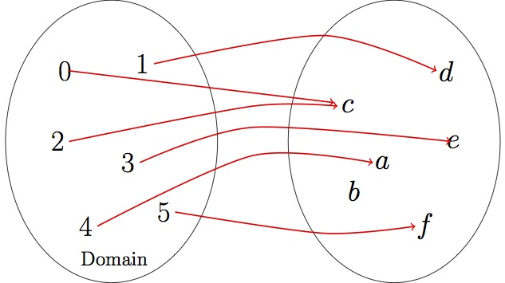

\(\{(1,x),(3,t),(1,y),(4,y)\}\) is a relation. The set of all first entries of the pairs in a relation is called the domain, and the set of all second entries is called the range. We will denote them by \(D\) and \(R\text{,}\) respectively.
Example1.1.2.
The relation \(\{(1,x),(3,t),(1,y),(4,y)\}\) has domain \(D=\{ 1,3,4\}\) and range \(R=\{x,t,y\}\) (remember that when listing the elements of a set, we never repeat the same element twice).
The relation \(\{(0,c),(1,d),(2,c),(3,e),(4,a),(5,f)\}\) has domain \(D=\{0,1,2,3,4,5\}\) and range \(R=\{a,c,d,e,f\}\)
The relation \(\{ (1,1), (2,1), (3,1), (2,1)\}\) has domain \(D=\{1,2,3\}\) and range \(R=\{1\}\text{.}\)
Note that in part a. of the last example, we can find two pairs that have the same first entry, but different second entries: \((1,x)\) and \((1,y)\text{.}\) But this is not the case for parts b. and c. In these relations, for every element of the domain, there is only one element of the range that is paired with it. So we can think of the relations in b. and c. as rules: if we are given the first entry, we can determine the second one. Such relations are called functions.
Definition1.1.3.
A function\(f\) from a set \(A\) to a set \(B\) is a relation that provides a rule for matching each element of the domain \(A\) with exactly one element of the range \(B\text{.}\)
So relations b. and c. in the last example are functions, but a. is not. Note that in part c. we had the two identical pairs \((2,1)\) and \((2,1)\text{.}\) This is OK for a function, because even though the first entries are the same, so are the second entries. We are just repeating twice the same rule: given \(2\text{,}\) we get \(1\text{.}\)
Subsection1.1.1Functions from diagrams
Since a function pairs each element of the domain with only one element of the range, we can picture it by drawing an arrow from each element of the domain to the corresponding entry of the range, as in the following diagram:

Figure1.1.4.A function with domain \(D=\{0,1,2,3,4,5\}\) and range \(R=\{a,c,d,e,f\}\)
Note that the element \(b\) in the previous diagram is not in the range, because there is no element of the domain that is paired with it. The essential thing about a function is that it sends each element of the domain to a unique element of the range. So we cannot have one element of the domain sent to two different elements of the range. But it is OK to have two or more elements of the domain sent to the same element of the range (like the element \(c\) in the figure above).
To remember this, think of the domain of a function as a set of people, and the range as a set of birthdays. Each person must have a unique birthday (a person cannot be born twice!) but it is of course OK to have two people with the same birthday.
An element of the domain is also called an input value, and an element of the range an output value.
Subsection1.1.2Functions from tables
A common way to describe a function is to make a table that lists the domain elements in a row, with the corresponding range elements below, as in the following example.
Example1.1.5.
The following table describes a function with domain \(D=\{1,2,3,4,5\}\) and range \(R=\{0,1,4,5,8\}\text{.}\)
\(x\)
\(1\)
\(2\)
\(3\)
\(4\)
\(5\)
\(y\)
\(8\)
\(5\)
\(4\)
\(1\)
\(0\)
Sometimes it may be more convenient to list the elements as columns instead of rows, with the domain elements on the left. So the function of the previous example would be:
\(x\)
\(y\)
\(1\)
\(8\)
\(2\)
\(5\)
\(3\)
\(4\)
\(4\)
\(1\)
\(5\)
\(0\)
Subsection1.1.3Square roots and cube roots
If we square \(3\text{,}\) we get \(3^2=9\text{,}\) and so we often say “The square root of \(9\) is \(3\)”. But this isn't quite right, because if we square \(-3\) we get \(9\) as well: \((-3)^2=9\text{.}\) So to be precise we should say “A square root of \(9\) is \(3\) (and another one is \(-3\))”
This leads us to conclude that there are two square roots of \(9\text{,}\) that is, \(3\) and \(-3\text{,}\) often written as \(\pm 3\text{.}\) This means that there are two solutions of the equation \(x^2=9\) and that is, \(x=\pm 3\text{.}\) BUT, we should not confuse this with the symbol \(\sqrt{9}\text{.}\) When we write \(\sqrt{9}\) we mean the positive square root of 9. So, \(\sqrt{9}=3\text{,}\) while the solutions of the equation \(x^2=9\) are \(\pm \sqrt{9}\text{,}\) or \(\pm 3\text{.}\)
Example1.1.6.
Suppose we want to solve the equation \(x^2-4y-1=0\) for \(x\text{.}\)
\(x^2-4y-1\)
\(=\)
\(0\)
The given equation
\(x^2-4y-1 {\color{red}{+4y+1}}\)
\(=\)
\(0{\color{red}{+4y+1}}\)
add \(4y+1\) to both sides
\(x^2\)
\(=\)
\(4y+1\)
simplify
\(x\)
\(=\)
\(\pm \sqrt{4y+1}\)
take square root, with \(\pm \) sign.
So we find two solutions, \(x=\pm \sqrt{4y+1}\text{.}\)
Because the square of a negative number is positive, and the square of a positive number is positive, we can never get a negative number by squaring any real number. So for example the equation \(x^2+4=0\) has no solutions, because if we try to solve it we get \(x=\pm \sqrt{-4}\text{,}\) and that is not a real number.
For cube roots, things are different. That's because if \(x\) is negative, then \(x^3\) is also negative. So for example \((-2)^3=-8\text{.}\) This means that the solution of \(x^3=8\) is just \(x=2\text{,}\) and the solution of \(x^3=-8\) is \(x=-2\text{.}\) Compare with the situation for squares: \(x^2=9\) has two solutions, and \(x^2=-9\) has no solutions.
Example1.1.7.
Consider the equation \(u^3+27w=0\text{.}\) We want to solve this equation for \(u\text{.}\)
\(u^3+27w\)
\(=\)
\(0\)
The given equation
\(u^3+27w \color{red}{-27w}\)
\(=\)
\(0 \color{red}{-27w}\)
subtract \(27w\) from both sides
\(u^3\)
\(=\)
\(-27w\)
simplify
\(u\)
\(=\)
\(\sqrt[3]{-27w}\)
take cube root, without\(\pm \) sign
\(u\)
\(=\)
\(-3\sqrt[3]{w}\)
simplify
This time we found only one solution, \(u=-3\sqrt[3]{w}\text{.}\)
For higher exponents, such as \(x^4\text{,}\)\(x^5\text{,}\) etc, we just need to consider whether the exponent is even or odd. So for example \(x^4 = 3\) has two solutions, \(x=\pm \sqrt[4]{3}\text{,}\) and \(x^4=-3\) has no solutions, while \(x^5=3\) has one solution \(x=\sqrt[5]{3}\) and \(x^5=-3\) has one solution \(x=-\sqrt[5]{3}\text{.}\)
Subsection1.1.4Functions from equations
Suppose we are given an equation in two variables \(x\) and \(y\text{,}\) such as \(y-3x^2=0\text{.}\) If we solve it for \(y\text{,}\) we find a single answer:
\(y-3x^2\)
\(=\)
\(0\)
The given equation
\(y-3x^2 \color{red}{+3x^2}\)
\(=\)
\(0 \color{red}{+3x^2}\)
add \(3x^2\) to both sides
\(y\)
\(=\)
\(3x^2\)
simplify
In this case we say that the given equation defines \(y\) as a function of \(x\), and we call \(x\) the independent variable, and \(y\) the dependent variable.
That's because if we choose any value we want for \(x\text{,}\) such as \(x=2\text{,}\) then the formula \(y=3x^2\) allows us to find \(y\text{:}\)
So the independent variable is for the input of the function (in the domain), and the dependent variable for the output (in the range).
But suppose we solve instead the same equation for \(x\text{:}\)
\(y-3x^2\)
\(=\)
\(0\)
The given equation
\(y-3x^2 \color{red}{-y}\)
\(=\)
\(0 \color{red}{-y}\)
add \(3x^2\) to both sides
\(-3x^2\)
\(=\)
\(-y\)
simplify
\(x^2\)
\(=\)
\(\displaystyle \frac{y}{3}\)
divide both sides by \(-3\)
\(x\)
\(=\)
\(\displaystyle \pm \sqrt{\frac{y}{3}}\)
take square root, with \(\pm\) sign
This time we found two answers for a given value of \(y\text{:}\) either \(\sqrt{y/3}\text{,}\) or \(-\sqrt{y/3}\text{.}\) This is like a person having two birthdays. It means that the equation does not define \(x\) as a function of \(y\text{.}\)
While the most common name for the input variable is \(x\text{,}\) and the most common name for the output variable is \(y\text{,}\) it is important to bear in mind that any names can be used for either variable. So it is quite possible to have an equation that determines \(x\) as a function of \(y\) (see for example Problem 1.1.3).
Subsection1.1.5Problems
Problem1.1.8.
Decide if the diagrams define functions, and give the domain and range for each function.